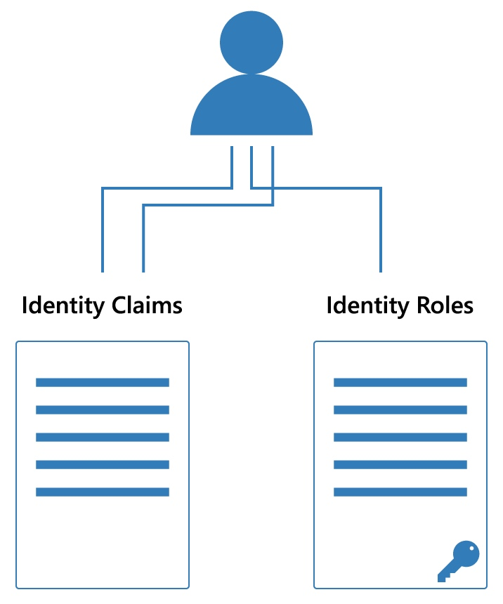
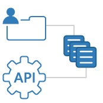

https://solliance.net/products/policyserver
PolicyServer is an authorization solution for modern applications. It supports the necessary patterns to achieve the separation of authentication and authorization - including a management application, management APIs and a runtime engine that deals with advanced scenarios around policy design, policy hierarchy, and integration with identity.
IDENTITY != PERMISSIONS

Authorization is hard - and authorization is all too often conflated with authentication and identity. These concerns should be clearly separated. Managing "Identity and Access Management" using a single product or solution leads to problems as your software becomes more complex.
Identity has it's own complexities including integration workflows with different protocols and external identity providers. In addition, while proof of authentication from an identity system produces identity claims, possibly including role claims from that system - these "identity roles" are not typically meaningful to applications in a solution - and thus are not a good fit for authorization.
IDENTITY + PERMISSIONS == AUTHORIZATION
Identity is universal. Permissions are application specific. This is why the identity system should not define permissions. Instead, identity should be one of the inputs to an authorization system. The combination of identity and an application-specific policy produces the actual permissions for the application.
While there are many ways to model authorization, the concept of roles and permissions are the most prevelant. Despite the simplicity of these concepts, modeling authorization is a design-intensive activity - not to be taken lightly - that requires tools to simplify modeling and the execution of application policy.
A FLEXIBLE POLICY MODELING SOLUTION
PolicyServer supports simple role-based policies, granular permission-based policies and complex policy hierarchies.
POLICYSERVER FEATURES
POLICY MANAGEMENT

We provide you with the management tools to design your policies, from simple to complex.
These tools include:
* Management UI to help you define and manage policies
* Policy visualizer
* Integration with identity users and roles for transformation
* Policy evaluation tester
* Management APIs to support DevOps workflows
CLIENT LIBRARIES
Integrate authorization to your applications with ease using our client libraries.
With our tools you can:
* Spend more time on policy design, less on authorization tooling
* Integrate our policy engine with your application
* Use your technology platform's authorization mechanism to enforce policy
* Connect your identity system output to policy evaluation
* Migrate legacy applications to modern authorization
POLICY ENGINE
Our policy engine supports complex hierarchical policy evaluation. It is distributed as a lightweight and scalable API that you can host according to your own solution topology requirements. Integration to the policy engine is made simple through our client libraries.
AUDIT LOGS AND COMPLIANCE
Our management tools and policy runtime are both built to support detailed audit logs for reporting and compliance. Our built-in auditing features can support connectors to push audit logs to the desired target for your hosting and data topology.
SERVICES
POLICY DESIGN
PolicyServer provides you with the necessary tools to design and execute authorization policies - allowing you to focus on the actual authorization requirements for your solution and the policy design. Still, defining policies for any solution is a design-intensive task - and we can provide you with the support you need to get there marrying our team's experience in policy authorization to your team's domain experience.
IDENTITY PROVIDER INTEGRATION
At Solliance, our security practice specializes in identity protocols, integrations with identity providers including IdentityServer, Azure AD, Auth0, Okta, Ping Federate, OneLogin and others. We can help you design your identity workflows, including API security, and link that identity story to your PolicyServer implementation as well.